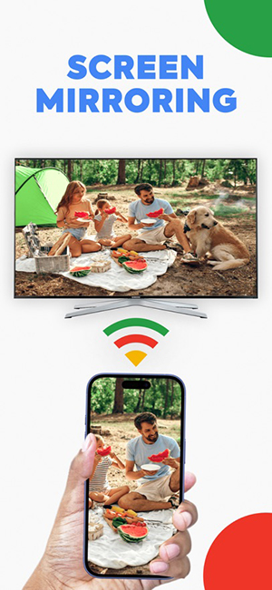
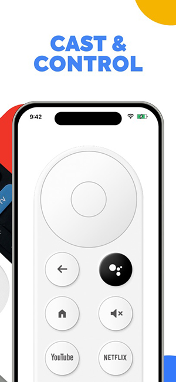

为什么投屏时手机烫得能煎蛋？ChromeCast 背后的协议栈拆解
屏幕镜像时手机发热耗电快不是 bug 而是架构使然。从实时编码、RTSP 握手到 Wi-Fi 持续传输，一条链路看清楚 Cast 协议到底在手机上做了什么，以及为什么推文件就轻松得多。
你有没有过这样的经历：手机连着电视投了 20 分钟屏幕镜像，拿起来烫手，电量还掉得比平时快三倍。一开始我以为是自己手机性能不行，换了新机型还是一样——这才意识到问题根本不在硬件，而在 ChromeCast 这条投屏链路本身的设计取舍。
问题：镜像模式 vs 推送模式，差距从哪来？
同样是把画面搬到电视上，ChromeCast官网这款投屏工具有两种核心工作方式：屏幕镜像和推送本地文件。前者开 15 分钟就能让手机电池从 80% 掉到 30%，后者推一部两小时的电影，手机甚至不会发热。这背后的区别，就是整个 Cast 协议栈的设计逻辑。
拆解：镜像模式到底在手机上做了什么？
我花了点时间把 ChromeCast 的连接流程翻了个遍——ChromeCast文档里对这段链路的描述很详细——整个链路可以拆成四段同时跑的任务。理解这四段，发热耗电的问题就不是玄学了。
第一段：屏幕持续录帧
镜像模式下，ChromeCast 需要把手机屏幕的每一个像素实时抓下来。这不是系统截图——截图是静态的，而镜像是每秒 30~60 帧的连续录屏。手机的屏幕采集层一直开着，处理器以固定频率从显示缓冲区拷贝画面数据。
这本身就是一项持续的 CPU 开销，但还不是最大的。
第二段：实时视频编码
录下来的原始画面如果直接发，数据量大得离谱。一个 1080P 的屏幕，原始 RGB 数据一秒就要 370 多 MB，即使是 Wi-Fi 6 也扛不住。所以 ChromeCast 必须在手机端实时做 H.264/H.265 压缩。
这才是发热的真正元凶。视频编码是计算密集型任务——处理器的多核同时跑压缩算法，频率拉满，温度自然飙升。ChromeCast 或系统投屏设置里把画质从 1080P 降到 720P，编码压力立刻小一圈，原理就在这：分辨率减半，编码的数据量直接缩到四分之一。
第三段：Wi-Fi 高速持续发送
压缩完的视频流（通常 2~8 Mbps）需要通过 Wi-Fi 持续发给 Chromecast 设备。Wi-Fi 芯片在发射模式下功耗不低，而且投屏不能断——丢一帧画面就卡一下，所以 ChromeCast 的网络层几乎是零缓冲实时发送，不会攒包再发，这意味着 Wi-Fi 芯片一直在满负荷工作。
更糟的是，如果路由器和手机之间信号不好，丢包率上升，ChromeCast 会不断重传，Wi-Fi 芯片的发射时间进一步拉长，耗电和发热雪上加霜。
第四段：协议握手与状态同步
ChromeCast 和 Chromecast 之间跑的是 Google Cast 协议（基于 RTSP + WebSocket 的混合架构）。连接建立时需要握手验证，协议要求手机和 Chromecast 的系统时间差控制在 10 分钟以内——差太远握手直接失败。
这个细节我一开始没注意到，后来 ChromeCast 连不上设备，排查半天才发现是手机自动对时被关了，时间漂了快半小时。把"自动获取时间"打开，重启 ChromeCast 立刻就能连上。
连接建立后，Cast 协议还会持续发送心跳包和状态回传信号——电视端的播放进度、音量变化，ChromeCast 这边需要实时同步更新。这部分开销不大，但也是四个部件同时工作的最后一块拼图。
对比：推送模式为什么轻松得多？
理解了镜像模式的四段链路，推送模式的原理就反过来好懂了。推送文件时，手机根本不做实时编码，也不持续采集屏幕。
ChromeCast 只是把本地视频文件一段一段地"搬"给 Chromecast。Chromecast 拿到文件后自己解码、自己播放，手机在整个过程中只承担一个"文件中转站"的角色——发完就闲下来了。这就好比镜像模式是你现场做菜给客人吃，全程站在灶台前；推送模式是你把外卖盒子递过去，客人自己打开吃。
这也是为什么推送模式下手机发热应该很轻——如果推文件时手机还烫，那问题多半出在后台有别的应用在同时下载或同步，不是 ChromeCast 本身的锅。

取舍：这套设计的代价是什么？
Cast 协议的整套设计，本质上是把计算压力分摊到了手机端。Chromecast 设备本身算力很弱（初代 Chromecast 的 RAM 只有 256MB），做不了实时视频编码——只能让手机来扛。如果你还没装 ChromeCast，从官方下载拿一份就行。
这个取舍带来了几个实际影响：
第一，镜像质量直接取决于手机性能。 老手机可能卡帧、画质糊，新手机上同样的设置就流畅。ChromeCast 的编码参数是自适应的，但上限永远是手机处理器的能力。
第二，Wi-Fi 信号成了硬门槛。 Cast 协议要求手机和 Chromecast 在同一 Wi-Fi 名字下（双频合一的路由器如果配置不当，手机和设备可能被分到不同频段，ChromeCast 就搜不到）。信号隔墙太多、距离太远，丢包率飙升，镜像体验直接崩盘。Chromecast 躲在电视背后挡信号是常见问题——附送的 HDMI 延长线就是干这个用的。
第三，供电方式影响稳定性。 用电视 USB 口取电的 Chromecast，电视关机时会跟着断电重启。下次开机后 Chromecast 可能还在启动中，ChromeCast 搜不到设备是常事。最稳的做法始终是用原装电源适配器插墙插，让 Chromecast 保持常电状态。
判断：它适合什么场景？
ChromeCast 的协议栈设计，决定了它是一款为"投屏辅助"而生、而非"电视替代"而生的工具。
适合的场景很明确：临时展示 PPT、快速把手机上的照片视频放到大屏上看、用大屏刷视频时不想抱着手机。这些场景下推送模式够用、镜像模式用得不多，手机发热的代价在可接受范围内。
不适合的场景也很清晰：长时间连续镜像（比如把手机当电视盒子用）、网络信号差的环境、老款手机。这些情况下要么手机烫得没法拿，要么画面卡顿体验糟糕。
我自己的做法是：镜像模式超过 15 分钟就插电源、摘掉厚手机壳；能推文件就绝不镜像——毕竟推完之后手机放一边歇着就行，何必让它扛编码的活。

ChromeCast 的安装包约 18MB，版本号目前到 v3.0，包名是 com.castfor.chromecast.remotecontrol。如果你也在玩投屏，不妨多留意一下自己手机在镜像时的发热情况——那不是你的手机不行，是 ChromeCast 和 Cast 协议在替你做着一份实时编码的苦差事。完整的资料备份我同步放到了 GitHub、Gitee、GitCode 三个平台，方便不同网络环境下取到。